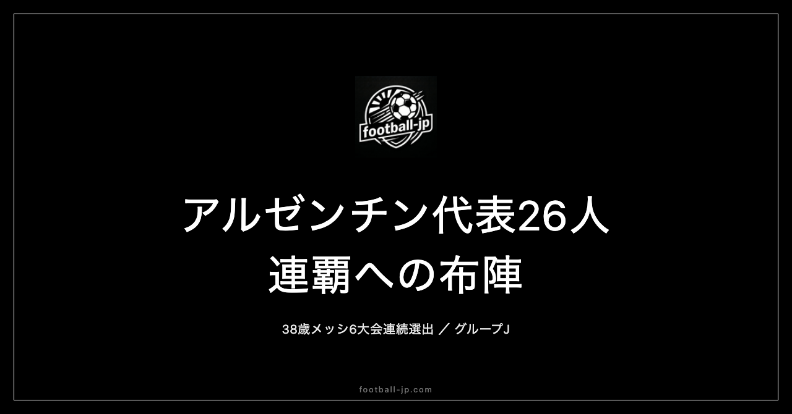

W杯連覇狙うアルゼンチン代表26人発表｜38歳メッシ6大会連続選出
2026年5月28日、リオネル・スカローニ監督がW杯2026に向けたアルゼンチン代表26名を発表した。2022年カタール大会覇者として連覇を目指す現王者のリストに、負傷明けながら38歳のリオネル・メッシが6大会連続で名前を連ねた。ディバラ・マスタントゥオーノ・アクーニャという注目名の落選も話題を呼んだ26名を読み解く。

リーグ別分布：ラ・リーガ勢7名が最多
26名の所属クラブ別リーグ分布は以下の通りだ。
| リーグ | 人数 | 主な選手 |
|---|---|---|
| 🇪🇸 スペイン（ラ・リーガ） | 7名 | ムッソ、モリーナ、N.ゴンサレス、シメオネ、J.アルバレス、アルマダ、ロ・セルソ |
| 🏴 イングランド（プレミアリーグ） | 5名 | E.マルティネス、L.マルティネス、ロメロ、エンソ、マカリステル |
| 🇫🇷 フランス（リーグ・アン） | 5名 | ルジ、バレルディ、メディナ、タグリアフィコ、バルコ |
| 🇺🇸 アメリカ（MLS） | 2名 | メッシ、デ・パウル |
| 🇦🇷 アルゼンチン国内 | 2名 | モンティエル（リーベル）、パレデス（ボカ） |
| 🇮🇹 イタリア（セリエA） | 2名 | ニコ・パス、ラウタロ |
| 🇩🇪 ドイツ（ブンデスリーガ） | 1名 | パラシオス |
| 🇵🇹 ポルトガル（プリメイラ・リーガ） | 1名 | オタメンディ |
| 🇧🇷 ブラジル国内 | 1名 | J.M.ロペス |
最多はラ・リーガ組の7名で、アトレティコ・マドリーだけでムッソ・モリーナ・アルマダ・N.ゴンサレス・シメオネ・J.アルバレスの6名が集中している点が際立つ。プレミアリーグ組も5名を占め、5クラブにわたって分散している。フランス・リーグアン組の5名はマルセイユに3人（ルジ・バレルディ・メディナ）が固まる構成だ。
また、MLSのインテル・マイアミからメッシとデ・パウルの2名が選ばれた。欧州5大リーグ以外から複数名が入ることは近年の代表では珍しいが、実績と信頼が優先される選考であることを示している。
GK 3人：マルティネスを軸にした守護神層
正GKはエミリアーノ・マルティネス（アストン・ヴィラ🏴）が揺るぎない地位を持つ。2022年カタール大会でPK戦3本ストップという決定的な働きでアルゼンチンに優勝をもたらした守護神だ。プレミアリーグのアストン・ヴィラで毎シーズン高水準のパフォーマンスを維持しており、今大会も正GKとして出場することは確実とみられる。
2番手はヘロニモ・ルジ（マルセイユ🇫🇷）、3番手はフアン・ムッソ（アトレティコ・マドリー🇪🇸）。ムッソはフィールド面での安定感が評価されており、将来の正GK候補としても期待されている。
DF 8人：ロメロ・L.マルティネスのCBコンビ
DFラインの中心を担うのはクリスティアン・ロメロ（トッテナム🏴）とリサンドロ・マルティネス（マンチェスター・ユナイテッド🏴）のCBコンビだ。どちらもプレミアリーグで中心的な役割を担ってきており、対人の強さとビルドアップへの参加能力を兼ね備えている。
ニコラス・オタメンディ（ベンフィカ🇵🇹）はベテランとして経験値をもたらす存在。カタール優勝メンバーでもある。ファクンド・メディナ（マルセイユ🇫🇷）やレオナルド・バレルディ（マルセイユ🇫🇷）は若手CBとしてリーグアンで出場機会を積んでいる。
サイドバックはゴンサロ・モンティエル（リーベル・プレート🇦🇷）とナウエル・モリーナ（アトレティコ・マドリー🇪🇸）が右を、ニコラス・タグリアフィコ（リヨン🇫🇷）が左を担う。モンティエルは2022年大会の決勝PK戦で優勝を決めるキックを沈めた選手として知られており、今大会でも右サイドの軸を担う見込みだ。
注目の落選はマルコス・アクーニャ（2022年大会の主力左SB）。代表での役割を長年担ってきたベテランだが、今回の選考ではタグリアフィコが優先された。
MF 7人：マカリステル・エンソの中盤構成
中盤の要はアレクシス・マカリステル（リヴァプール🏴）とエンソ・フェルナンデス（チェルシー🏴）だ。マカリステルはリヴァプールで中盤の中心として機能し、ボール保持・プレス耐性・前線への供給を高いレベルでこなしている。エンソはカタール大会でも存在感を示しており、若くして代表の顔となっている選手だ。
レアンドロ・パレデス（ボカ・ジュニオルス🇦🇷）はアルゼンチン国内に戻ってからも代表でのポジションを維持した守備的MF。エセキエル・パラシオス（レヴァークーゼン🇩🇪）はブンデスリーガで躍進した中盤の一角で、カバーリング能力と球出しを評価されての選出だ。
ロドリゴ・デ・パウル（インテル・マイアミ🇺🇸）はMLSへの移籍後も継続的に選ばれてきた経験あるミッドフィールダー。ジョバニ・ロ・セルソ（レアル・ベティス🇪🇸）とバレンティン・バルコ（ストラスブール🇫🇷）が7人目の席に入った。
今回の選考で話題を呼んだのはパウロ・ディバラ（ローマ）の落選だ。セリエAで高い評価を維持していたが、スカローニ監督の選択は異なった。
FW 8人：メッシ・ラウタロ・J.アルバレスの三枚看板
前線の軸は、リオネル・メッシ（インテル・マイアミ🇺🇸）、ラウタロ・マルティネス（インテル🇮🇹）、フリアン・アルバレス（アトレティコ・マドリー🇪🇸）の3人だ。2022年カタール大会での優勝を支えた前線の構成が、4年後も継続するかたちになった。
メッシは今大会時点で38歳。負傷明けながら6大会連続の選出となった。彼が代表に選ばれること自体が世界中の注目を集め、コンディション次第でチームの戦い方が変わりうる存在であることは変わらない。
ニコラス・ゴンサレス（アトレティコ・マドリー🇪🇸）とジュリアーノ・シメオネ（アトレティコ・マドリー🇪🇸）はいずれもアトレティコで出場機会を積んできた選手。ティアゴ・アルマダ（アトレティコ・マドリー🇪🇸）も同クラブに所属する若手FWだ。ニコ・パス（コモ🇮🇹）はセリエAで頭角を現した選手で、今回が大きなチャンスとなる。ホセ・マヌエル・ロペス（パルメイラス🇧🇷）はブラジル国内リーグから唯一の選出となった。
なお、18歳のフランコ・マスタントゥオーノ（レアル・マドリー）は今回の最終メンバーから外れた。将来有望な若手として注目されていたが、スカローニはより実績のある構成を選んだ形だ。
注目選手を深掘りする
リオネル・メッシ（インテル・マイアミ🇺🇸）
38歳、6大会連続出場。W杯という舞台でのメッシの存在感は数字では測れない。2022年カタール大会では7試合・7ゴール・3アシストという圧巻の成績で優勝に導き、大会MVPを受賞した。今大会への参加は負傷明けでのものだが、コンディションが整えばどのチームにとっても最大の脅威となることは変わらない。6大会という記録そのものが、アルゼンチンとW杯の歴史を象徴している。
ラウタロ・マルティネス（インテル🇮🇹）
インテル・ミラノのストライカーとして定着し、セリエAで着実に実績を積んできた。カタール大会ではメッシとの2トップが機能し、今大会でも中心FWとして期待される。メッシが不在の場面でも得点を取れるかどうかが、アルゼンチンの優勝を左右する鍵のひとつだ。
フリアン・アルバレス（アトレティコ・マドリー🇪🇸）
カタール大会でも重要な得点源として機能した選手。その後マンチェスター・シティからアトレティコ・マドリーへ移籍し、ラ・リーガの舞台でも継続的に出場機会を得ている。万能型のFWとして前線のどこでも機能できる点はスカローニにとって大きな戦術的オプションだ。
エンソ・フェルナンデス（チェルシー🏴）
プレミアリーグ・チェルシーで中盤の軸を担う若い選手。カタール大会でも出場し、大舞台での経験を持っている。動き出しの早さとボール奪取能力を武器に、今大会では中盤のダイナミズムをもたらす役割が期待される。
グループJ：アルジェリア・オーストリア・ヨルダンと対戦
アルゼンチンはW杯2026でグループJに入り、アルジェリア・オーストリア・ヨルダンと同居した。スカローニ監督は「簡単な相手はいない」とコメントしているが、現王者にとっては比較的くみしやすい組み合わせと見られている。
グループステージの日程は以下の通り。
- 6月16日：🇩🇿 アルジェリア戦
- 6月22日：🇦🇹 オーストリア戦
- 6月27日：🇯🇴 ヨルダン戦
初戦のアルジェリアはアフリカ予選を勝ち上がった強豪、第2戦のオーストリアは組織的な欧州勢、最終戦のヨルダンはアジアからの出場国だ。グループを着実に突破し、決勝トーナメントからが連覇への本番という位置づけになる。
現王者・連覇候補としての構造分析
アルゼンチンは2022年カタール大会の覇者として、今大会の優勝候補最上位グループに位置する。W杯の連覇はブラジルが1958・1962年に達成して以来、64年間実現されていない。その難しい挑戦にスカローニ監督のチームが挑む。
今回の26名の特徴は「2022年の継続性」だ。カタール大会の優勝メンバーを軸として維持しながら、アトレティコ・マドリーの若手（アルマダ・シメオネ・N.ゴンサレス）やバルコ・ニコ・パスといった新しい顔を加えている。主力の年齢が上がってきている中で、次世代の選手をどのタイミングで使うかというマネジメントがスカローニの課題になる。
最大の変数はメッシのコンディションだ。38歳・負傷明けという状況で、グループステージから先発で出続けることが難しい可能性もある。メッシが限定的な出場にとどまった場合でも、ラウタロ・J.アルバレス・マカリステルを中心にしたチームとして機能できるかが連覇の鍵を握る。
守備面ではロメロとL.マルティネスのCBコンビがプレミアリーグ仕込みの強度を持ち、E.マルティネスの守護神としての安定感は2022年からさらに増している。前線・中盤・守備のすべてにおいてクオリティが揃った、真の連覇候補と言えるスカッドだ。